Abstract
Frontier large language models (LLMs) have recently been shown to improve a smaller model by editing its weights directly, referred to as weight-space programming (WSP). We investigate how well frontier LLMs can use WSP to improve the mathematical ability of tiny LLMs, and we introduce WSPMathBench, a benchmark that measures this ability. WSPMathBench operates by having a primary LLM edit the weights of a tiny LLM (68 M to 950 M parameters) in a single reply, without training or ever running the tiny model. Its score is the mean significant change in the accuracy of five tiny LLMs on held-out mathematics benchmarks. We evaluate seven frontier LLM configurations on two tiers: one limited to a short list of fixed operations, and one free to write a program that rewrites the weights. Every tested LLM, in at least one of the tiers, repairs a tiny model that has a known fault, but none reliably improves a healthy one. Most notably, when allowed to write a program, the two strongest LLMs encode hand-designed arithmetic procedures directly into the weights of TinyStories-33M, a model trained only on children’s stories, raising it from 4.5% to 90% and 100% on basic arithmetic. To our knowledge, this is the first demonstration of an LLM encoding such a procedure into a trained language model’s weights in one reply and without a single test run.
1Introduction
The significance of direct weight editing does not need restating. Recent foundational work by Takehi et al. [1], replicated in [2], has shown that direct weight editing, also called weight-space programming (WSP), can be performed by frontier large language models (LLMs), though not without limitations. That WSP remains an exceptionally difficult task, with the upper ceiling of LLMs’ potential for it yet unknown, makes it an excellent avenue for evaluating LLM performance, in addition to the value of WSP itself. We investigate WSP by a selection of frontier LLMs and develop WSPMathBench,1 a benchmark that evaluates the ability of an LLM (the primary LLM) to perform WSP on much smaller LLMs (the tiny LLMs; here, ones with under a billion parameters) to improve their mathematical abilities.2 The comparison between the unedited and the edited tiny LLM’s performance on a selection of held-out math benchmarks determines the WSPMathBench score of the primary LLM (Fig. 1).

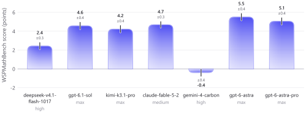
oneshot_spec
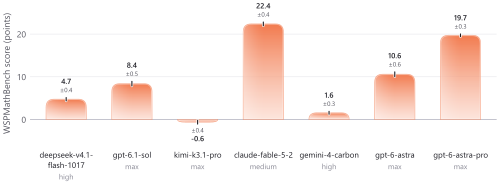
oneshot_codeoneshot_code, the largest contribution to the WSPMathBench score comes from heavy edits to TinyStories-33M which drastically change its performance (Section 4.1). Note the different vertical scales.WSPMathBench uses WSP in its strictest form. Where Takehi et al. let an LLM work agentically over many turns, with a budget of forward passes over the course of performing the edit, here the primary LLM gets a single reply and does not ever run the tiny LLM: any gain has to come from understanding the weights, not from trial and error. Every primary LLM receives the same task and the same information, and the benchmark employs five tiny LLMs from separate developers and from a range of sizes and intelligence, so that the results do not rest on the quirks of one model. Our contributions are:
- The benchmark. WSPMathBench is cost effective ($0.26 to $20 per primary LLM in our runs3), far from saturation (the best WSPMathBench score so far is 22.4 of roughly 77 attainable points), and evaluates an ability beyond comparison with a human reference level.
- Results. We evaluate seven frontier LLM configurations in two tiers of WSP, with pair-wise statistics for every comparison. Every primary LLM demonstrates ability to repair a tiny model with a known fault; none reliably improves an otherwise healthy tiny model, and attempting the same kind of repair applied to a healthy model may even hurt its performance. The benchmark’s headroom consists of most of this gap.
- Installed circuits. For the smallest tiny model, TinyStories-33M, a model trained only on children’s stories, given the freedom to write code, the strongest primary LLMs compile a working arithmetic procedure (also called an arithmetic circuit) directly into its weights, in one reply and without any test runs, taking TinyStories-33M accuracy from 4.5%, unedited, on basic arithmetic, to 90% and 100%.
2Description of the Benchmark
2.1One session
A session refers to the process of WSP for the benchmark and involves two models: the primary LLM is the model under evaluation and does the editing; the tiny LLM is the model being edited. (We also write “primary model” and “tiny model”.) The primary LLM receives one prompt containing the task, the rules, the name and shape of every editable tensor, the unedited tiny model’s results on its practice set, and eight of its failing answers. It replies once, describing the edit, with the construction of the edit depending on the tier. The edit is applied to the tiny model’s weights, and the edited and unedited models are then each run at least three times on its held-out benchmarks (Fig. 2). The primary LLM never sees the tiny model run, and does not see questions from the held-out math benchmarks (BasicArithmetic for TinyStories-33M being the exception, see Appendix I).

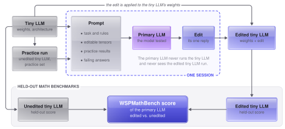
2.2Selection of tiny models
The five tiny models (Table 1) were chosen to differ in design and developer, to span a range of sizes under a billion parameters, and to cover a wide range of mathematical ability. Qwen3.5-0.8B, the model edited by Takehi et al., has one known fault: it falls into a loop (“Wait, …”), repeating the same text over and over until it runs into the token limit (also called “doomlooping” [3]). Fixing that looping enables ability the model already has, and performing such a fix is the low bar of the benchmark. MobileLLM-R1-950M and LFM2.5-350M have no such obvious fault, so an improvement in their held-out scores would be a genuine capability gain, not merely a repair. gemma-3-270m-it and TinyStories-33M have almost no mathematical ability to begin with, so for them, increased held-out scores mean ability was added.
The four chat models use, for the held-out benchmarks, GSM8K-500 (a randomly selected set of 500 questions from the GSM8K test dataset [4]) and MATH-500 [5, 6], while their practice set is a sample of 256 questions from the GSM8K and MATH training sets (following Takehi et al.). TinyStories-33M, trained only on children’s stories, is evaluated on BasicArithmetic, a custom set of basic arithmetic questions (Appendix I), which forms both the practice set (1,000 questions) and the held-out benchmark (250 problems, each written once in symbols and once in words, for 500 questions)4 (with an overlap of 221 problems between the two, due to the small problem space). All five tiny models are able to be run on a single consumer GPU, which makes evaluating the tiny models local and cost effective; their fixed evaluation protocols are given in Appendix A, along with details on the grading implementation, and the hardware and serving settings in Appendix B.
| Tiny model | Weights | Evaluated on | Unedited (%) | Role |
|---|---|---|---|---|
| Qwen3.5-0.8B [7] | 800 M | GSM8K-500, MATH-500 | 12.0, 7.4 | known fault (doomloops); the low bar |
| MobileLLM-R1-950M [8] | 950 M | GSM8K-500, MATH-500 | 73.1, 74.8 | already strong; no obvious fault |
| LFM2.5-350M [9, 10] | 355 M | GSM8K-500, MATH-500 | 29.8, 17.9 | mid-range; no obvious fault |
| gemma-3-270m-it [11] | 268 M | GSM8K-500, MATH-500 | 1.4, 4.7 | almost no math |
| TinyStories-33M [12] | 68 M | BasicArithmetic | 4.5 | stories only; no arithmetic |
2.3Tiers
We present results for WSPMathBench on two different levels of scope and implementation of the edit, which we denote as the tiers of the benchmark. In the first tier, labeled oneshot_spec, the approach of Takehi et al., the edit is a JSON list of at most eight operations5 drawn from a fixed vocabulary: zeroing an attention head, zeroing or scaling rows or columns of a tensor, and projecting a direction out of a tensor that writes to the residual stream. The primary LLM sees tensor names and shapes only, and no programs it writes are executed.
In the second tier, oneshot_code, the edit is a single Python program that can read every weight and replace any editable tensor. The program runs once, under fixed limits on time and memory (Appendix B), and the primary LLM does not ever see its output. Training of any kind, running or simulating the tiny model, and internet access are not allowed. The task asks only for better mathematics: the primary LLM is not asked to preserve the tiny model’s other abilities, and those abilities are not measured, so a primary LLM may in principle rewrite a tiny model to do nothing but arithmetic. Some in fact did take this approach (Section 4.1).
Both tiers are one-shot: the primary LLM is afforded one reply.6 For a frontier LLM, producing program that runs without errors is a far lower bar than WSP itself, so a failure at that stage is a real result and is kept as one. In both tiers the embeddings, the final normalisation layer and the output layer are frozen, and edits that merely re-scale a whole tensor are not allowed. The prompt asks that the edit come from an understanding of the network, and states that edits which only sharpen the output distribution or force a fixed answer are not desired (Appendix C). The one-shot tiers here are the strict end of the wider spectrum of tiers for WSPMathBench, set out in Appendix G.
2.4Scoring
Each tiny model is run on each of its held-out benchmarks at least three times, unedited and edited, and every answer is graded, so each question has, for both versions of the model, a fraction of runs that answer it correctly. The held-out score of a tiny model on a held-out benchmark is the mean of that fraction over its questions, in percent. For a tiny model t and one of its held-out benchmarks b, let \(d_{t,b}\) be the difference in held-out score between the edited and unedited tiny models (edited minus unedited); both answer the same questions, so pair-wise significance tests can be performed. A change counts only where it is larger than noise: each \(d_{t,b}\) is tested at a 95% confidence level by a pair-wise comparison over the questions [13]. A change that the test does not find significant counts as zero. This test compares one edited tiny model with its unedited counterpart and nothing else, so a primary LLM’s WSPMathBench score does not depend on which other primary LLMs were evaluated. It is therefore a single comparison, to which no correction for multiple comparisons applies, unlike the figures that compare all primary LLMs at once; the two can disagree for small changes (Appendix E).
Let T be the set of five tiny models and \(B_t\) the set of held-out benchmarks of t (two for each chat model, one for TinyStories-33M), and let \(c_{t,b}\) be the counted change for t on b: \(d_{t,b}\) where the test is significant and 0 otherwise. The final single-valued metric of a primary LLM in a tier, its WSPMathBench score, is
the mean counted change over each tiny model’s held-out benchmarks and then over the five tiny models.
WSPMathBench scores are reported in percentage points. An edit that significantly damages a tiny model’s performance loses points, so a negative WSPMathBench score is possible. If an edit raises an error or leaves the tiny model inoperable, the edited model is given a held-out score of 0 on that held-out benchmark, so it loses points rather than being left out of the average. A perfect WSPMathBench score would require every edited tiny model to answer every held-out question correctly; this would yield about 77 points, the mean headroom left by the unedited models (100 minus each unedited held-out score). Appendix E describes additional details about the standard error of the WSPMathBench score.
2.5Advantages of this nature of benchmark
Cost. With five tiny models employed, a full evaluation of a primary LLM requires only ten calls: one per tier for each tiny model. Benchmarks that remain meaningful at the frontier typically require thousands. In our runs the ten sessions cost between $0.26 and $19.72 per primary LLM, and all 70 sessions in this paper cost $40.86 (Appendix H; flex pricing was used where available); the tiny models are operated locally, on one consumer GPU (Appendix B), at no API cost of operating the tiny models themselves.
Saturation. Even benchmarks that long resisted saturation are now showing signs of it, as indicated by recent frontier results on Humanity’s Last Exam [14–16]. A perfect WSPMathBench score would require editing every tiny model such that they all answer every held-out question correctly, including gemma-3-270m-it, which starts at 1.4% on GSM8K-500 and which no primary LLM has yet raised significantly on either held-out benchmark. The best WSPMathBench score so far is 22.4 of roughly 77 points, and most are below 6. The difficulty of the benchmark can also be increased considerably at little cost, by adding more tiny models or employing harder held-out benchmarks.
Comparison with human ability. LLM benchmarks have largely been built around comparison with the best of human performance at a given task. WSP offers no such reference level: no human can read the weights of a model of this size and write a targeted improvement to them blind, in one sitting. WSPMathBench therefore measures a capability against the task itself rather than against people, a step towards post-human-comparison based evaluations for LLMs.
3Results
3.1Setup
We evaluated seven primary LLM configurations: gpt-6.1-sol, kimi-k3.1-pro, gpt-6-astra and gpt-6-astra-pro at maximum reasoning effort, deepseek-v4.1-flash-1017 and gemini-4-carbon at high, and claude-fable-5-2 at medium. The maximum effort setting was not used for deepseek-v4.1-flash-1017 or claude-fable-5-2; the latter reached its output-token limit before finishing at higher settings. The other models were run at their highest usable effort. Every configuration completed one session per tiny model per tier.
3.2Headline scores
Primary LLMs behave very differently in the two tiers (Fig. 1; differences on each held-out benchmark in Tables 2 and 3). In oneshot_spec, five of the seven primary LLMs score between 4.2 and 5.5 points with standard errors near 0.35 and cannot be separated; deepseek-v4.1-flash-1017 (2.4) and gemini-4-carbon (−0.4) fall below them. In oneshot_code the WSPMathBench scores spread from −0.6 to 22.4: claude-fable-5-2 (22.4) and gpt-6-astra-pro (19.7) lead, followed by gpt-6-astra (10.6) and gpt-6.1-sol (8.4). Most of that spread comes from the results on one tiny model: edits to TinyStories-33M contribute 17.2 of claude-fable-5-2’s 22.4 points and 19.1 of gpt-6-astra-pro’s 19.7, both of which wrote a working arithmetic circuit into the tiny model (Section 4.1). Even the best WSPMathBench score is under a third of the roughly 77 points available.
| Qwen3.5-0.8B | MobileLLM-R1 | LFM2.5-350M | gemma-3-270m | TinyStories | ||||||
|---|---|---|---|---|---|---|---|---|---|---|
| Primary LLM | GSM8K | MATH | GSM8K | MATH | GSM8K | MATH | GSM8K | MATH | BasicArith. | Score |
| Unedited (%) | 12.0 | 7.4 | 73.1 | 74.8 | 29.8 | 17.9 | 1.4 | 4.7 | 4.5 | |
| deepseek-v4.1-flash-1017 | +25.2 | +18.9 | −9.8 | −10.6 | −0.2 | −0.6 | −0.1 | −3.0 | +1.8 | 2.4 ± 0.35 |
| gpt-6.1-sol | +34.9 | +24.7 | −6.4 | −4.8 | +0.3 | −0.7 | −1.0 | −1.6 | +0.1 | 4.6 ± 0.36 |
| kimi-k3.1-pro | +33.2 | +26.4 | −7.8 | −9.6 | −0.6 | −0.7 | +0.4 | −1.0 | +0.3 | 4.2 ± 0.36 |
| claude-fable-5-2 | +28.2 | +18.7 | −1.8 | +0.0 | +0.8 | +1.0 | +0.2 | −0.8 | +0.7 | 4.7 ± 0.32 |
| gemini-4-carbon | +32.2 | +24.6 | −25.3 | −30.6 | +0.1 | −0.1 | −1.0 | −4.0 | −0.4 | −0.4 ± 0.37 |
| gpt-6-astra | +33.9 | +24.7 | −3.5 | −0.7 | +1.2 | +0.5 | −0.1 | −0.5 | +0.9 | 5.5 ± 0.36 |
| gpt-6-astra-pro | +34.3 | +24.9 | −4.8 | −2.7 | +0.9 | −0.3 | −0.6 | −1.2 | +0.3 | 5.1 ± 0.35 |
oneshot_spec: change in each tiny model’s held-out score, edited minus unedited, in points. Bold entries are significant at the 95% confidence level; grey entries are not, and count as zero in the WSPMathBench score (last column, with its standard error).| Qwen3.5-0.8B | MobileLLM-R1 | LFM2.5-350M | gemma-3-270m | TinyStories | ||||||
|---|---|---|---|---|---|---|---|---|---|---|
| Primary LLM | GSM8K | MATH | GSM8K | MATH | GSM8K | MATH | GSM8K | MATH | BasicArith. | Score |
| Unedited (%) | 12.0 | 7.4 | 73.1 | 74.8 | 29.8 | 17.9 | 1.4 | 4.7 | 4.5 | |
| deepseek-v4.1-flash-1017 | +32.3 | +21.2 | −0.8 | +1.2 | +0.5 | +0.1 | −1.4 | −4.7 | −0.9 | 4.7 ± 0.39 |
| gpt-6.1-sol | +1.7 | −0.5 | −3.5 | +0.6 | +0.5 | +0.1 | −0.5 | −0.8 | +43.7 | 8.4 ± 0.53 |
| kimi-k3.1-pro | −9.5 | −5.8 | −1.0 | +1.6 | −0.2 | −1.5 | −1.4 | −4.7 | +7.5 | −0.6 ± 0.44 |
| claude-fable-5-2 | +28.8 | +20.7 | −2.0 | +2.6 | −0.3 | +0.3 | −0.4 | −0.1 | +85.9 | 22.4 ± 0.44 |
| gemini-4-carbon | +15.1 | +9.5 | −2.1 | +1.5 | −1.6 | +0.0 | −0.5 | −0.6 | −4.5 | 1.6 ± 0.34 |
| gpt-6-astra | +0.5 | +0.5 | −2.6 | +0.7 | +0.4 | −1.2 | −0.7 | −1.4 | +54.9 | 10.6 ± 0.55 |
| gpt-6-astra-pro | +3.8 | +2.4 | −1.1 | +0.3 | +0.5 | −0.3 | +0.5 | −0.7 | +95.5 | 19.7 ± 0.31 |
oneshot_code: change in each tiny model’s held-out score, edited minus unedited, in points. Layout as in Table 2.3.3Failed edits
Even at the frontier the one-shot rule has an impact. Every one of the 35 oneshot_spec replies produced a valid edit, but 4 of the 35 oneshot_code sessions did not: three programs raised an error before saving anything (a TypeError, a SyntaxError, and a failed assertion that the program had written to check its own construction), and one ran to completion and chose to save nothing. Following the one-shot principle, a program that raises an error without saving an edit results in the corresponding held-out benchmark scores for the session set as zero, while a program that runs without error but saves nothing is evaluated as the unedited model.
4Discussion
Apart from the installed circuits of Section 4.1, three patterns account for most of the WSPMathBench scores.
Every primary LLM repairs a clear fault. In oneshot_spec, all seven primary LLMs increase the held-out scores of Qwen3.5-0.8B significantly on both held-out benchmarks: from 12.0% to between 37% and 47% on GSM8K-500, and from 7.4% to between 26% and 34% on MATH-500 (Fig. 3, top). All seven do so by the same approach, by projecting the output direction of the token “Wait” out of late-layer tensors, and four of them (gpt-6.1-sol, kimi-k3.1-pro, gpt-6-astra and gpt-6-astra-pro) submitted the identical edit, operation for operation (which is not necessarily surprising between the three OpenAI models). The prompt contains no example of such an edit; this suggests the primary models converging on the same diagnosis and solution. The multi-turn agent of Takehi et al., with forward passes available, raised the same model from 7.9% to 48.1% on MATH-500; the best single reply here reaches 33.8% from 7.4%. The settings are not directly comparable, but one reply without feedback recovers roughly two thirds of the gain observed from the agent in their experiments. Every frontier LLM we tested clears the benchmark’s low bar; the differences between them lie in the results for the other tiny models.
The same repair damages a healthy model. In oneshot_spec, MobileLLM-R1-950M is significantly lowered in 11 of its 14 comparisons and raised in none, by a decrease of 2.7 to 10.6 points for five primary LLMs and by 25 and 31 percent for gemini-4-carbon. Six of the seven edits again project out “Wait”, although MobileLLM-R1-950M does not loop. Only claude-fable-5-2, which made a single small edit, causes no significant loss. The primary LLMs attempt a repair-based approach, which happens to be suitable for Qwen3.5-0.8B, for a model that does not need it, and its performance on the held-out benchmarks worsens for it. In oneshot_code they are more careful: the edited MobileLLM-R1-950M models perform worse, at a significant level, in only 2 of 14 comparisons.
General improvement has yet to be observed. The performance of LFM2.5-350M does not change significantly in any of its 28 comparisons, and for gemma-3-270m-it performance is not ever increased significantly. Of the 84 comparisons on MobileLLM-R1-950M, LFM2.5-350M and gemma-3-270m-it, exactly one shows a significant gain: claude-fable-5-2 in oneshot_code raises MobileLLM-R1-950M on MATH-500 by \(2.6 \pm 1.0\) points. Even this gain should be read with caution. It is significant when that edited model is compared with the unedited model alone, which is the test behind the WSPMathBench score, but not when all seven edited models and the unedited model are compared together via the Holm–Bonferroni method [17] (Fig. 5, bottom, where its bar shares a letter with the unedited model’s). Improving a model that lacks a clear flaw is the hard problem WSPMathBench poses, and is precisely why WSPMathBench is well suited to evaluating frontier LLMs’ abilities.
oneshot_code is not simply the stronger tier. On Qwen3.5-0.8B, the three OpenAI models gain about 34 points on GSM8K-500 in oneshot_spec but at most only 3.8 in oneshot_code: only allowing limited edits steers them towards the effective repair, while when allowed to write code they attempt more ambitious edits which end up doing more harm than good. The two tiers therefore measure different things, and oneshot_code, which separates the primary LLMs far more clearly, is the more informative of the two tiers for frontier models.

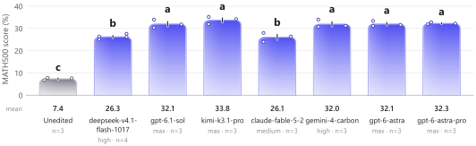

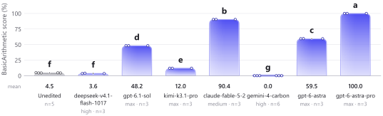
oneshot_spec edits. Bottom: installed circuits, TinyStories-33M on BasicArithmetic after oneshot_code edits. One bar per primary LLM, with the unedited tiny model in grey. Each bar is the mean held-out score over runs, printed beneath it; whiskers show the standard error of the mean and dots the individual runs. Under each name are the reasoning effort and the number of runs (n). Bars sharing a letter do not differ significantly (Compact Letter Display (CLD) [18] via many sample pair-wise comparison [13] using the Holm–Bonferroni method [17], 95% confidence level). The letters come from one joint test of all eight bars, which is stricter than the edited-against-unedited test behind the WSPMathBench score (Appendix E). All 18 such figures are in Appendix D.4.1Installed circuits in TinyStories-33M
The largest gains in edited TinyStories-33M come from completely re-writing weights to “hijack” the network into acting as an arithmetic circuit, rather than attempting to coax its language abilities into also performing arithmetic. In oneshot_code, claude-fable-5-2 and gpt-6-astra-pro each wrote a working arithmetic circuit into the weights of TinyStories-33M, a model trained only on children’s stories, and raised it on BasicArithmetic from 4.5% to 90.4% and to 100%, the same in each of three evaluation runs (Fig. 3, bottom). Each edit writes a hand-built circuit into the existing weights, leaving the architecture and the frozen tensors untouched. Both build their tables from arithmetic, not from the practice answers, so neither copies answers from the practice set that overlaps the BasicArithmetic held-out benchmark (Appendix I).
These are programs compiled into transformer weights, written blind and in one reply. To succeed, the primary LLM has to get the tokenizer, the geometry of the embeddings, the attention arithmetic, the nonlinearity and the numerical precision right without a single test run. This is an extremely literal form of weight-space programming, and may be considered an interesting result in and of itself, aside from its part in the benchmark evaluation.
The two circuits are built differently. claude-fable-5-2 grafts its circuit onto the network: it selects three low-norm attention heads and the lowest-norm MLP neurons in the first two layers, and overwrites them, leaving the rest of the model as trained. Its circuit is largely a lookup over single-digit problems, extended by a digit-wise adder and subtractor. gpt-6-astra-pro replaces the network outright: it rebuilds every editable tensor from zero into something closer to an algorithm, which decodes the operands, accumulates a running sum, forms products from GELU ramps, and tests candidate answers for equality (Appendix F).
Two more primary LLMs raise TinyStories-33M far above its unedited held-out score in oneshot_code: gpt-6-astra to 59.5% and gpt-6.1-sol to 48.2%. In oneshot_spec, where the limited edit does not allow for a circuit to be installed, none of the primary LLMs move TinyStories-33M by more than 2 points.
The cost to language. While these edits achieve large gains in mathematical accuracy, they come at the cost of the tiny models’ language abilities. WSPMathBench only asks for better mathematics and we do not here measure the impact of the edits on the tiny models in other areas (Section 2.3). Neither of the two TinyStories-33M models edited by claude-fable-5-2 and gpt-6-astra-pro still produces coherent English (Table 4). The unedited TinyStories-33M gets the arithmetic wrong but continues in fluent prose. The model edited by claude-fable-5-2 gives the correct answer and then a string of unrelated words, and it continues a story opening in the same way, although the edit overwrote only a part of the network’s first two layers: the installed circuit is written at a scale that dominates the trained weights (Appendix F). The model edited by gpt-6-astra-pro, in which every editable tensor was rebuilt, gives the answer followed by a run of spaces and periods, and it answers a story opening with full stops and an occasional number: effectively no language use is left at all. In both cases the installed arithmetic circuit in effect overwrites the language skills, rather than being in addition to them. This is within the rules of the task, and this is why a measure of preserved behaviour is included under future work.
Held-out question: 7*5= (answer 35) | |
| Unedited | 4555. Finally, the taxi arrived at the house. |
| claude-fable-5-2 | 35 hum titles libraries libraries libraries libraries libraries libraries libraries libraries libraries libraries libraries titles whom |
| gpt-6-astra-pro | 35 . . . . . . . . . . . . . . . |
Held-out question: seven times five equals (answer 35) | |
| Unedited | 10, but they are still friends. They like to play together. |
| claude-fable-5-2 | 35 hum 35 wait titles libraries libraries libraries titles titles titles titles titles libraries libraries titles |
| gpt-6-astra-pro | 35 . . . . . . . . . . . . . . . |
Story opening: One day, Tom found a big red ball in the garden. | |
| Unedited | He was very happy and wanted to play with it. He kicked the ball and it went far away. Tom ran after the ball, but he did not see the big rock in front of him. |
| claude-fable-5-2 | sideways certain certain certain allowed certain certain certain certain certain certain certain certain certain both stamps certain certain certain certain friends friends certain certain certain certain both snow???????tyagerar certain certain |
| gpt-6-astra-pro | . . . . . . . . . . . . . . . . . . . . . . . 165 . . . . . . . . . . . . . . . . |
Story opening: The little dog was sad because | |
| Unedited | he didn't have any friends to play with. He went to the park to find a friend. He saw a little girl playing with a ball. The dog went up to her and said, " |
| claude-fable-5-2 | erer Scotland Scotland Scotland guards pictured Scotland Clark Scotland Clark Scotlandwake guards certain certain certain certain certain certain certain certain certain certain certain certain certain certain certain certain certain certain certain certain certain certain certain certain certain certain certain |
| gpt-6-astra-pro | . . . . . . . . . . . . . . . . . . . . . . . . . . . . . . . . . . . . . . . . |
oneshot_code versions edited by claude-fable-5-2 and gpt-6-astra-pro. The answers to the two held-out questions are from one evaluation run of each model, which stops after 16 tokens. The story openings are not part of the evaluation: each model was run on them once afterwards, with the same sampling settings and a limit of 40 tokens. Leading spaces are not shown.4.2Summary of Results
The results show a clear gradient of difficulty. Repairing a known fault is a low bar: every frontier LLM we tested accomplishes it in one reply. Building a narrow capability from nothing is within reach of the strongest models when they are allowed to write code. Improving a healthy model in general has yet to be observed. Because the WSPMathBench score averages over tiny models with different strengths and weaknesses, it is best read alongside its per-model breakdown (Tables 2 and 3): the single value largely reflects whether the primary LLM repaired Qwen3.5-0.8B, whether it wrote a circuit into TinyStories-33M, and how much damage it did elsewhere. What is left allows for considerable headroom. Taking the best result on each tiny model from any primary LLM in either tier gives about 25 of the 77 points; of the 52 that no primary LLM has claimed, about 40 lie on MobileLLM-R1-950M, LFM2.5-350M and gemma-3-270m-it. WSPMathBench is premised on the hypothesis that frontier primary LLMs will eventually reach a level of ability capable of improving these models too, and the results on Qwen3.5-0.8B and TinyStories-33M demonstrate that the WSPMathBench score will register such gains when they come.
Limitations. Each WSPMathBench score rests on one session per tiny model and tier, so its standard error covers the sampling of held-out questions, not the variation between repeated edits by the same primary LLM; the evaluation itself is stable, since the held-out scores of four identical edits lie within 1.7 points of each other (Appendix E). The prompt for Qwen3.5-0.8B (version 1) is framed around repairing a flaw; the prompt for the other four (version 2) is open-ended. Reasoning effort differs across primary LLMs; thus the comparison is between configurations. Given that the differences are absolute, tiny models with more headroom weigh more in the WSPMathBench score. The oneshot_code rules against training and running the tiny model are stated in the prompt and enforced by manual audit rather than by the sandbox. Finally, the WSPMathBench score does not separate a primary LLM’s ability to read weights from its ability to write them; this is deliberate, on the hypothesis that the two are strongly correlated.
Future work. Clear additional developments are results for repeated sessions per primary LLM; a measure of preserved behaviour reported next to the WSPMathBench score (for example, story quality for TinyStories-33M); the intermediate tiers of Appendix G, which add feedback step by step toward the setting of Takehi et al.; and further tiny models and harder held-out benchmarks.
Code and data availability. The code for WSPMathBench can be found at github.com/yagoiroot/WSPMathBench. The claude-fable-5-2 and gpt-6-astra-pro edits of TinyStories-33M have been uploaded to Hugging Face at huggingface.co/RootML/TinyStories-33M-WSP-arithmetic-claude-fable-5-2 and huggingface.co/RootML/TinyStories-33M-WSP-arithmetic-gpt-6-astra-pro. The rest of the edited tiny model weights may be provided upon reasonable request to the authors.
Acknowledgements. Research reported in this publication was supported by the National Eye Institute of the National Institutes of Health under Award Number R21EY035400. The content is solely the responsibility of the authors and does not necessarily represent the official views of the National Institutes of Health. This work was also supported by the NASA MIRO CUNY program at Hunter College. We acknowledge support from a PIVOT Research award (Award #12871) from the Simons Foundation.
References
- Rikiya Takehi, Jayden Teoh, Alex Zhang, and Omar Khattab. Sparks of Weight-Space Programming: LLMs can natively read & write neural network weights. https://rikiyat.github.io/blog/weight-space-programming/, November 2026. Blog post.
- Roksana Goworek, Alexander Hickey, Federico Nanni, and Martin O’Reilly. Replicating weight-space programming: Writing and reading neural network weights with frontier LLMs, November 2026. URL https://www.turing.ac.uk/news/publications/replicating-weight-space-programming-writing-and-reading-neural-network-weights. Accessed 2026-11-16.
- Mehrnaz Mofakhami, Ananya Sahu, Alejandro R. Salamanca, Daniel D’souza, Alexandre Berard, Thomas Euyang, Marzieh Fadaee, and Julia Kreutzer. Building multilingual bridges: Data mixing as the pillar of generalization for in-language reasoning, 2026. URL https://arxiv.org/abs/2609.10445.
- Karl Cobbe, Vineet Kosaraju, Mohammad Bavarian, Mark Chen, Heewoo Jun, Lukasz Kaiser, Matthias Plappert, Jerry Tworek, Jacob Hilton, Reiichiro Nakano, Christopher Hesse, and John Schulman. Training verifiers to solve math word problems. arXiv preprint arXiv:2110.14168, 2021.
- Dan Hendrycks, Collin Burns, Saurav Kadavath, Akul Arora, Steven Basart, Eric Tang, Dawn Song, and Jacob Steinhardt. Measuring mathematical problem solving with the MATH dataset. NeurIPS, 2021.
- Hunter Lightman, Vineet Kosaraju, Yura Burda, Harri Edwards, Bowen Baker, Teddy Lee, Jan Leike, John Schulman, Ilya Sutskever, and Karl Cobbe. Let’s verify step by step, 2023. URL https://arxiv.org/abs/2305.20050.
- Qwen Team. Qwen3.5: Towards native multimodal agents, February 2026. URL https://qwen.ai/blog?id=qwen3.5.
- Changsheng Zhao, Ernie Chang, Zechun Liu, Chia-Jung Chang, Wei Wen, Chen Lai, Sheng Cao, Yuandong Tian, Raghuraman Krishnamoorthi, Yangyang Shi, and Vikas Chandra. MobileLLM-R1: Exploring the limits of sub-billion language model reasoners with open training recipes. arXiv preprint arXiv:2509.24945, 2025.
- Liquid AI. LFM2.5-350M: No size left behind. Liquid AI Blog, 2026. https://www.liquid.ai/blog/lfm2-5-350m-no-size-left-behind.
- Liquid AI. LFM2 technical report. arXiv preprint arXiv:2511.23404, 2025.
- Gemma Team. Gemma 3, 2025. URL https://arxiv.org/abs/2503.19786.
- Ronen Eldan and Yuanzhi Li. TinyStories: How small can language models be and still speak coherent English?, 2023. URL https://arxiv.org/abs/2305.07759.
- Evan Miller. Adding error bars to evals: A statistical approach to language model evaluations, 2024. URL https://arxiv.org/abs/2411.00640.
- Artificial Analysis. Comparison of AI models across intelligence, performance, and price. https://artificialanalysis.ai/models, 2026. Accessed 2026-11-16.
- Center for AI Safety and Scale AI. Humanity’s Last Exam: Diamond. https://huggingface.co/datasets/cais/hle-diamond, September 2026. Dataset, revision 04eeb7e. MIT license. Accessed 2026-11-16.
- Center for AI Safety, Scale AI, and HLE Contributors Consortium. A benchmark of expert-level academic questions to assess AI capabilities. Nature, 649:1139–1146, 2026. doi: 10.1038/s41586-025-09962-4. URL https://arxiv.org/abs/2501.14249.
- Sture Holm. A simple sequentially rejective multiple test procedure. Scandinavian Journal of Statistics, 6(2):65–70, 1979. ISSN 03036898, 14679469. URL http://www.jstor.org/stable/4615733.
- Hans-Peter Piepho. An algorithm for a letter-based representation of all-pairwise comparisons. Journal of Computational and Graphical Statistics, 13(2):456–466, 2004. doi: 10.1198/1061860043515. URL https://doi.org/10.1198/1061860043515.
- Hynek Kydlíček. Math-Verify: Math verification library. https://github.com/huggingface/math-verify, 2025. Version 0.9.0, Apache-2.0 license. Accessed 2026-11-16.
- Woosuk Kwon, Zhuohan Li, Siyuan Zhuang, Ying Sheng, Lianmin Zheng, Cody Hao Yu, Joseph E. Gonzalez, Hao Zhang, and Ion Stoica. Efficient memory management for large language model serving with pagedattention. In Proceedings of the ACM SIGOPS 29th Symposium on Operating Systems Principles, 2023.
- OpenRouter, Inc. OpenRouter. https://openrouter.ai, 2026. Accessed 2026-11-17.
AGrading and Tiny-model protocols
Each tiny model is evaluated under one fixed configuration of settings (referred to as a protocol) (Table 5), used for the unedited and the edited model alike. All models run in bf16 (Appendix B gives the hardware and the serving settings). For GSM8K-500 and MATH-500, grading employed either gpt-5.6-luna or a deterministic attempt with gpt-5.6-luna as fallback, respectively, to extract the answers from the full text of the tiny model’s response. The evaluation of the extracted answer against the gold answer was then performed deterministically, using math_verify [19] in the case of MATH-500 due to the symbolic answers. Grading on BasicArithmetic was performed purely deterministically. Only answers that loop or reason without end reach the 16,000-token limit.
The GSM8K-500 and MATH-500 held-out benchmarks used a system prompt of “Please reason step by step, and put your final answer within \boxed{}”, with the given held-out question as the user prompt. This placement was used for all four chat models, for the unedited and the edited model alike. It differs from the practice runs shown to the primary LLM, and from the protocol described in its prompt, for Qwen3.5-0.8B, LFM2.5-350M and gemma-3-270m-it: there the same instruction followed the question in the user prompt. For MobileLLM-R1-950M the instruction was the system prompt in both.
| Tiny model | Format | Sampling | Token limit |
|---|---|---|---|
| Qwen3.5-0.8B | chat, thinking on | \(T{=}0.6\), top-p 0.95, top-k 20, presence penalty 1.5 | 16,000 |
| MobileLLM-R1-950M | chat | \(T{=}0.6\), top-p 0.95 | 16,000 |
| LFM2.5-350M | chat | \(T{=}0.1\), top-k 50, repetition penalty 1.05 | 16,000 |
| gemma-3-270m-it | chat | \(T{=}1.0\), top-k 64, top-p 0.95 | 16,000 |
| TinyStories-33M | completion | \(T{=}0.1\) | 16 |
BLocal hardware environment and vLLM settings
Aside from the API calls to the primary LLMs and the gpt-5.6-luna grader, everything was performed on a single desktop computer: an NVIDIA GeForce RTX 5080 (16 GB), an AMD Ryzen 7 3700X (8 cores) and 128 GB of memory, under Windows 11. The tiny models and the oneshot_code programs ran in Ubuntu 24.04 under WSL2, which was given 64 GB of memory, 12 logical processors and no swap. Sessions were launched and evaluated from Python 3.11 on the Windows side. Table 6 lists the software versions.
| Used for | Software |
|---|---|
| Running the tiny models | Python 3.12.3, vLLM 0.29.0, PyTorch 2.13.0 (CUDA), |
| transformers 5.17.0, FlashInfer 0.6.18, Triton 3.7.1, | |
| NVIDIA driver 616.64 | |
Running oneshot_code programs | Python 3.12.3, PyTorch 2.15.0 (CPU only), NumPy 2.5.4, |
| SciPy 1.18.1, scikit-learn 1.9.1, pandas 3.1.1, SymPy 1.14.0, | |
| safetensors 0.8.0, tokenizers 0.23.3 | |
| Grading MATH-500 | math_verify 0.9.0 |
Serving the tiny models. The four chat models were served one at a time by vLLM’s OpenAI-compatible server [20], and the held-out questions were sent to it as chat requests, 128 in flight at once and without streaming. The server was started with prefix caching enabled, a GPU memory fraction of 0.85 and at most 128 concurrent sequences; the remaining settings are in Table 7. An unedited model and every edited version of it were served with identical settings, and only one model occupied the GPU at a time. vLLM does not support the architecture of TinyStories-33M (GPT-Neo), so that model was served by a small server built on the transformers library, which answers one completion request at a time.
| Tiny model | Engine | Context (tokens) | Further settings |
|---|---|---|---|
| Qwen3.5-0.8B | vLLM | 34,816 | text-only load, Triton attention, qwen3 parser |
| MobileLLM-R1-950M | vLLM | 32,768 | |
| LFM2.5-350M | vLLM | 32,768 | |
| gemma-3-270m-it | vLLM | 32,768 | |
| TinyStories-33M | transformers | 2,048 | one request at a time |
qwen3 reasoning parser separates the reasoning from the answer. Sampling settings and token limits are in Table 5.Numerical precision. Every tiny model runs in bf16. Qwen3.5-0.8B, LFM2.5-350M and gemma-3-270m-it are published in bf16 and were used as published. MobileLLM-R1-950M and TinyStories-33M are published in float32 and were converted to bf16 once; the converted weights are the ones the primary LLM reads and edits, as well as the ones the unedited held-out scores come from. Qwen3.5-0.8B keeps the recurrent state of its linear-attention layers in float32, the default: storing that state in bf16 is faster but changes the model’s outputs.
Edited models. An edited model is a full copy of the tiny model’s files in which the edited tensors replace the originals, each cast back to the data type it is stored in. It is loaded and served in exactly the same way as the unedited model.
Running oneshot_code programs. A oneshot_code program runs once, as a separate process in its own Python environment (Table 6), on the CPU only. It is limited to 900 seconds, 56 GB of memory and 8 threads, and these limits are stated in the prompt. The environment contains no tool for running the tiny model, but it is not a sealed sandbox: the rules against training, running the tiny model and using the internet are stated in the prompt and checked by manual audit.
Practice runs. The practice results shown to the primary LLM were produced on the same computer with the same software and sampling settings, with vLLM run in batch mode in place of the server. They differ from the runs on the held-out benchmarks in the token limit (32,768 for Qwen3.5-0.8B and 30,000 for the other three chat models, against 16,000) and in the placement of the instruction described in Appendix A.
CPrompt
The prompt has the same sections in both tiers: the task, how the result will be measured, what counts as an acceptable edit, the list of editable tensors, the practice set and the unedited model’s results on it, and eight failing answers chosen at random. It closes with the edit language (oneshot_spec) or with a description of the Python environment and its rules (oneshot_code). The prompt gives measurements only and no hints about what to look for; the example tokens in the edit language are “the” and “ the”.
The paragraph of the prompt that states what counts as an acceptable edit exists in two versions. Both are given below as sent, except that the list of frozen tensors, which is filled in for each tiny model, is shown in square brackets. Version 1 was used for Qwen3.5-0.8B:
WHAT COUNTS. We want edits that come from understanding the network: identify the components responsible for its failures (specific neurons, heads, directions or circuits) and change them in a way you can justify with evidence. Out of scope, and refused: [the frozen tensors], and any edit that only multiplies a whole tensor by a constant. Global knobs (making the whole output distribution sharper or flatter) are not what we are looking for.
Version 2 was used for the other four tiny models:
WHAT COUNTS. The goal is a model that scores higher under that protocol, and how you get there is open. You might remove something that holds the model back, strengthen something it already does well, or change how some part of it computes. The edit may be narrow (a few neurons, one head) or broad (a direction or a pattern across many layers), and it may pursue more than one of these at once. No route is preferred. The practice results and examples further down describe how the model behaves now: they are evidence to reason from, and they do not mark out what your edit should target. What we ask in every case is that the edit comes from understanding the network: say which components you are changing (neurons, heads, directions, circuits or larger structures), what you believe they do, and why changing them should make the model more accurate on problems it has not seen. Out of scope, and refused: [the frozen tensors], and any edit that only multiplies a whole tensor by a constant. An edit that only makes the whole output distribution sharper or flatter is not what we are looking for either: that is a decoding setting reached through the weights, and it shows nothing about the network. Nor is an edit that makes the model give the same answer, or one of a few fixed answers, whatever the problem says (for example by pushing the output toward a particular number): that can score above zero by matching the most common answers, but it removes the model’s dependence on the problem instead of improving how it solves one.
The last sentence of version 2 (“Nor is an edit that makes the model give the same answer …”) was added while the sessions were being run, in anticipation of the edge case of the primary models choosing to make the tiny model produce a constant output. The version 2 sessions of deepseek-v4.1-flash-1017, gpt-6.1-sol and kimi-k3.1-pro were sent the paragraph without it. None of these models explicitly stated in their response that making the tiny model produce a constant output was their goal, but this was the effect that the kimi-k3.1-pro oneshot_code edit of TinyStories-33M had, and thus this sentence was added as a precaution.
In oneshot_spec the prompt closes with the edit language. It is given below as sent for TinyStories-33M. For the other tiny models only the tensor names, the residual-stream width and the number of columns per attention head differ, and the lines on bias vectors and on the final norm’s centring are present only where they apply.
THE EDIT LANGUAGE. Reply with exactly one block that starts with ```json and contains
{"edits": [...]}, a list of at most 8 operations:
{"op": "zero_head", "layer": L, "head": H}
any layer; zeroes head H's input columns of layer L's
attn.attention.out_proj.weight (columns H*48 .. H*48+47)
{"op": "zero_columns", "tensor": NAME, "cols": [...]}
{"op": "zero_rows", "tensor": NAME, "rows": [...]}
{"op": "scale_columns", "tensor": NAME, "cols": [...], "factor": F}
{"op": "scale_rows", "tensor": NAME, "rows": [...], "factor": F}
{"op": "project_out", "tensor": NAME, "direction": DIR, "strength": S, "cols": [...] | "all"}
only for tensors that write to the residual stream (*.mlp.c_proj.weight and
*.attn.attention.out_proj.weight, shape [768, k]); with unit direction u:
W[:, cols] = W[:, cols] - S * u (u^T W[:, cols])
also for the bias vectors added with them (*.mlp.c_proj.bias and
*.attn.attention.out_proj.bias, shape [768]), with "cols": "all": b = b - S * u
(u^T b)
Directions DIR, resolved without running the model:
{"type": "unembed_token", "token": "the", "fold_final_norm": true}
the output-embedding row of that token (it must encode to exactly one token id);
with fold_final_norm the row is multiplied elementwise by the final norm's weight
(its centring and its bias are left out)
{"type": "unembed_mean", "tokens": ["the", " the"], "fold_final_norm": true}
the mean of several such rows
{"type": "svd", "tensor": NAME, "component": K}
the K-th left singular vector of a residual-writing tensor
Every direction is normalised to unit length. Limits: at most 8 operations; at most
64 indices per operation ("all" is allowed only in project_out); factors and
strengths between 0 and 4; indices are zero-based.
RULES. The block is validated before anything is applied. If any operation is invalid,
nothing is applied and you are shown the errors once. Only the block has an effect; write
your reasoning before it.
DResults on each held-out benchmark
Figs. 4 to 8 show every comparison between an edited tiny model and its unedited counterpart. There is one bar per primary LLM, with the unedited tiny model in grey. Each bar is the mean held-out score over runs, printed beneath it; whiskers show the standard error of the mean, dots are individual runs, and bars sharing a letter do not differ significantly. Under each name are the reasoning effort and the number of runs (n). The letters come from one joint test of all eight bars in a plot. That test is stricter than the one behind the WSPMathBench score and the bold entries of Tables 2 and 3, so a small change can be bold in a table while its bar shares a letter with the unedited model’s bar (Appendix E).

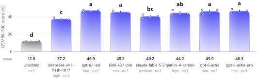

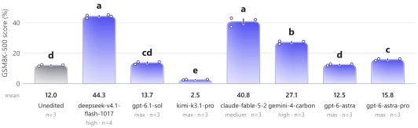

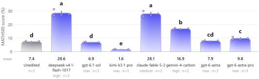
oneshot_spec, oneshot_code), MATH-500 (oneshot_spec, oneshot_code).
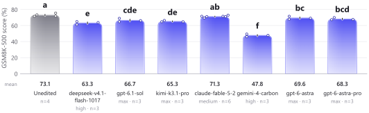

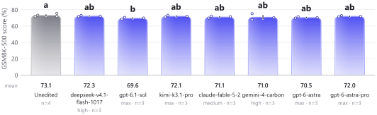

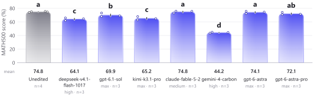

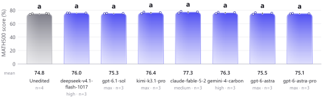
oneshot_spec, oneshot_code), MATH-500 (oneshot_spec, oneshot_code).
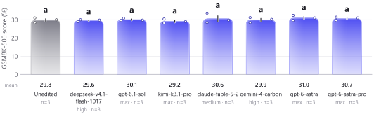

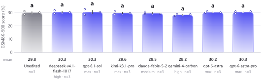

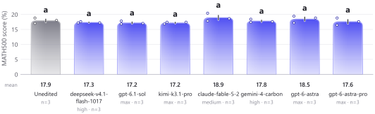

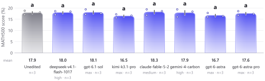
oneshot_spec, oneshot_code), MATH-500 (oneshot_spec, oneshot_code).
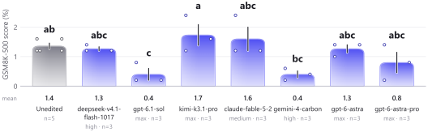

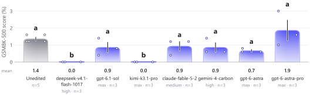

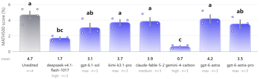

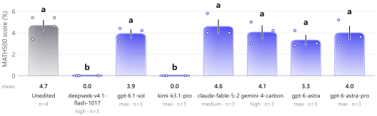
oneshot_spec, oneshot_code), MATH-500 (oneshot_spec, oneshot_code).
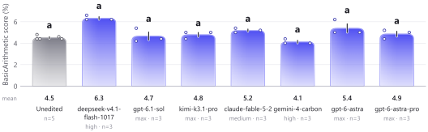
oneshot_spec. Bottom: oneshot_code.EThe WSPMathBench score and its uncertainty
Let T be the set of tiny models and \(B_t\) the held-out benchmarks of tiny model t. For each question, a model has a fraction of its runs that answer correctly; \(d_{t,b}\) is the mean over questions of the edited model’s fraction minus the unedited model’s (the difference of the two held-out scores), and \(\mathrm{SE}_{t,b}\) is its paired per-question standard error. The WSPMathBench score of Eq. (1) is then
and, taking held-out benchmarks as independent, its standard error is
A difference that is counted as zero keeps its standard error.
The standard error covers the sampling of held-out questions. It does not cover the variation between repeated edits by the same primary LLM, since each comparison rests on one session; the correlation between the WSPMathBench scores of different primary LLMs, which share the same unedited runs; or the effect of the significance threshold. The evaluation itself is stable: the four identical oneshot_spec edits of Qwen3.5-0.8B were each evaluated independently and reach held-out scores of 46.9, 45.2, 45.9 and 46.3% on GSM8K-500, and 32.1, 33.8, 32.1 and 32.3% on MATH-500.
Two significance tests. Significance is tested in two places and they may disagree. The WSPMathBench score, and with it the bold entries of Tables 2 and 3, rests on a comparison of one edited tiny model with its unedited counterpart alone: one test for each primary LLM, tiny model and held-out benchmark, at the 95% confidence level. Each is a single comparison, so no correction for multiple comparisons is applied, and a primary LLM’s WSPMathBench score depends only on its own edits (so that there is no dependence of the WSPMathBench score of one primary LLM on the other primary LLMs also evaluated). The figures (Fig. 3 and Appendix D) instead compare all eight versions of a tiny model with one another, the unedited model and the seven edited ones. That is 28 pairs, corrected together by the Holm–Bonferroni method [17], so a pair needs stronger evidence to count as different: a p-value as low as \(0.05/28 \approx 0.002\), against 0.05 for the score.
Large changes are significant in both cases. A small change can be significant in the first and not in the second, resulting in a bold entry in the table that is counted in the WSPMathBench score while its bar shares a letter with the unedited model’s bar. Eight of the 56 counted changes have p-values in the range where this can happen (between 0.002 and 0.05). All eight are changes of under 3 points, and seven are on MobileLLM-R1-950M or gemma-3-270m-it. They include the only significant gain on a healthy tiny model, the \(+2.6 \pm 1.0\) points of claude-fable-5-2 on MobileLLM-R1-950M and MATH-500 in oneshot_code (\(p = 0.009\)), which is not significant in the joint comparison of Fig. 5.
The ceiling of roughly 77 points is the mean over tiny models of the headroom left by the unedited held-out scores in Table 1.
FThe TinyStories circuits
Table 8 compares the two edits that install a working arithmetic circuit in TinyStories-33M.
The circuit of claude-fable-5-2 uses attention heads in the first layer to read the two operands and the operator at the position of the equals sign, and MLP neurons as AND gates over them. It holds a direct table for single-digit problems, together with a digit-wise carry adder and borrow subtractor for two-digit addition and subtraction. The overwritten components are written at scales chosen from norm bounds so that the circuit dominates what remains of the trained weights.
The circuit of gpt-6-astra-pro uses all four layers. The first decodes number words, operators and positions; the second accumulates a prefix sum; the third retrieves the first operand and computes the product from squares built out of GELU ramps; the fourth tests each candidate answer for equality, writes the match, and then writes a stop token.
Both circuits read the frozen embeddings and final normalisation layer to decode input tokens and to write toward output directions, and both generate their tables from arithmetic, not from the practice answers.
| Primary LLM | claude-fable-5-2 (medium) | gpt-6-astra-pro (max) |
|---|---|---|
| Tensors edited | 10 of 52 | 52 of 52 |
| Weight entries changed | 2.39 M (~8%) | 28.34 M (all but ~40) |
| Layers touched | 0 and 1 | all four |
| LayerNorms | unchanged | all per-layer norms replaced |
| Attention | 3 of 16 heads, layer 0 | every head, every layer |
| MLP neurons overwritten | ~700 (L0), 569 (L1) | all; 820/96/397/2400 active |
| Cost, wall time | $2.35, 11 min | $4.50, 29 min |
| Held-out score | 90.4% | 100% |
GThe spectrum of tiers
The two tiers of WSPMathBench for which results are presented here sit at the strict end of a spectrum ordered by how much the primary LLM can find out before it commits to an edit (Fig. 9). The setting of Takehi et al., with many turns and a budget of 5 to 50 forward passes, lies near the other end. The question is the same in every tier; what changes is how many opportunities for trial and error are afforded to the primary LLM. We have built machinery and present results for the two one-shot tiers.

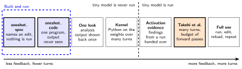
HCost
Table 9 gives the API cost and the summed wall time of the ten sessions behind each primary LLM’s pair of WSPMathBench scores. Together the 70 sessions cost $40.86. Flex pricing was used for the OpenAI models (aside from one session) and the Gemini models, which is cheaper per token at the cost of slower inference. Calls for OpenAI and Anthropic models were made through their APIs directly, while calls for the other models were made through OpenRouter [21], aside from two of the Gemini sessions that were made through Gemini’s API directly. All primary LLM calls were made between 11 and 14 November 2026.
| Primary LLM | Effort | 10 sessions ($) | oneshot_spec ($) | oneshot_code ($) | Time (min) |
|---|---|---|---|---|---|
| deepseek-v4.1-flash-1017 | high | 0.26 | 0.10 | 0.16 | 13 |
| gpt-6.1-sol | max | 1.50 | 0.33 | 1.17 | 121 |
| kimi-k3.1-pro | max | 2.60 | 1.00 | 1.60 | 37 |
| claude-fable-5-2 | medium | 4.84 | 1.16 | 3.69 | 19 |
| gemini-4-carbon | high | 5.21 | 2.16 | 3.05 | 153 |
| gpt-6-astra | max | 6.72 | 1.53 | 5.19 | 69 |
| gpt-6-astra-pro | max | 19.72 | 4.06 | 15.67 | 120 |
IBasicArithmetic
BasicArithmetic is a custom set of basic arithmetic questions written for use with TinyStories-33M, a model that completes text and cannot follow a chat prompt. Its problems cover the four operations (addition, subtraction, multiplication, and division), with mostly single-digit operands. The model continues the question, and the first number in its continuation is taken as its answer.
Problems and questions. A problem is one arithmetic task, such as \(2+2=4\). A question is one written form of a problem. Every problem is written twice, once in symbols (“2 + 2 =”) and once in words (“two plus two equals”), and the two written forms are separate questions, each graded on its own. Each set therefore has twice as many questions as problems: the held-out benchmark has 250 problems and 500 questions, and the practice set has 500 problems and 1,000 questions. Always answering 0 would give a held-out score of 12.0%.
Composition. Table 10 counts the problems in each set by operation. A single-digit problem has both operands from 0 to 9. A two-digit problem is an addition with at least one two-digit operand and a sum of at most 99, a subtraction from a two-digit number, or a two-digit number divided by a single-digit number with a single-digit result (the times table read backwards). No subtraction goes below zero, every division comes out whole, and there are no two-digit multiplications. The held-out benchmark is a random sample of these problems. The practice set contains every single-digit problem (287) and 213 two-digit problems, among them all 58 two-digit divisions.
| Held-out benchmark | Practice set | |||
|---|---|---|---|---|
| Operation | Single-digit | Two-digit | Single-digit | Two-digit |
| Addition | 60 | 15 | 100 | 78 |
| Subtraction | 50 | 15 | 55 | 77 |
| Multiplication | 60 | – | 100 | – |
| Division | 30 | 20 | 32 | 58 |
| Problems | 200 | 50 | 287 | 213 |
| Questions | 400 | 100 | 574 | 426 |
Symbolic forms. How a symbolic question is written varies, because in tests the answer of TinyStories-33M changed with it. Within each operation, half of the symbolic questions are written with spaces (“2 + 2 =”) and half without (“2+2=”). Multiplication is written with “x” in 60% of its symbolic questions and with “*” in the other 40%; division is always written with “/”. Spacing and symbol are drawn independently of each other and of the problem, and each problem gets one symbolic question, not one per style. The word form is always written the same way.
Overlap with the practice set. Because the space of such easy problems is small, the practice set overlaps the held-out benchmark: 221 of the 250 held-out problems are also practice problems, which is stated in the prompts to the primary LLMs. The other 29 are two-digit additions (15) and subtractions (14). The symbolic styles of the two sets were drawn separately, so a shared problem can be written differently in each (“7*5=” in one and “7 x 5 =” in the other). Counting questions instead of problems, 313 of the 500 held-out questions appear in the practice set exactly as written: all 221 word questions of the shared problems, and 92 of their symbolic questions.